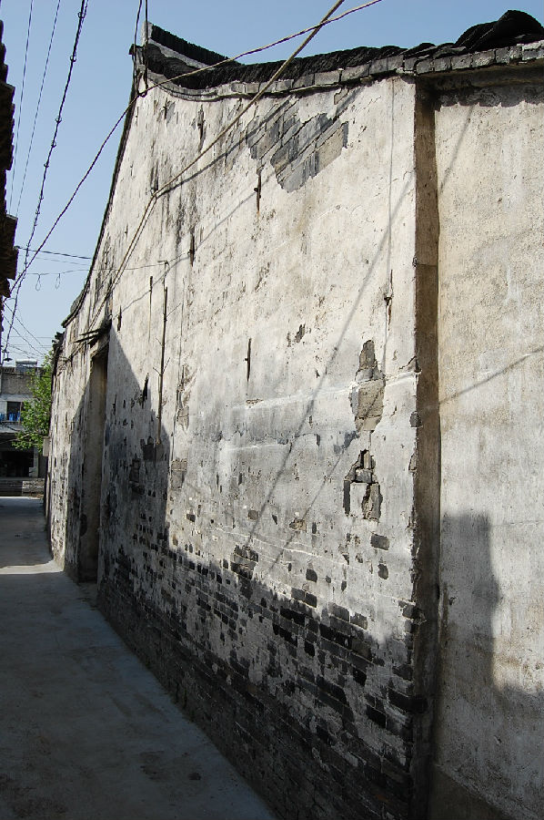
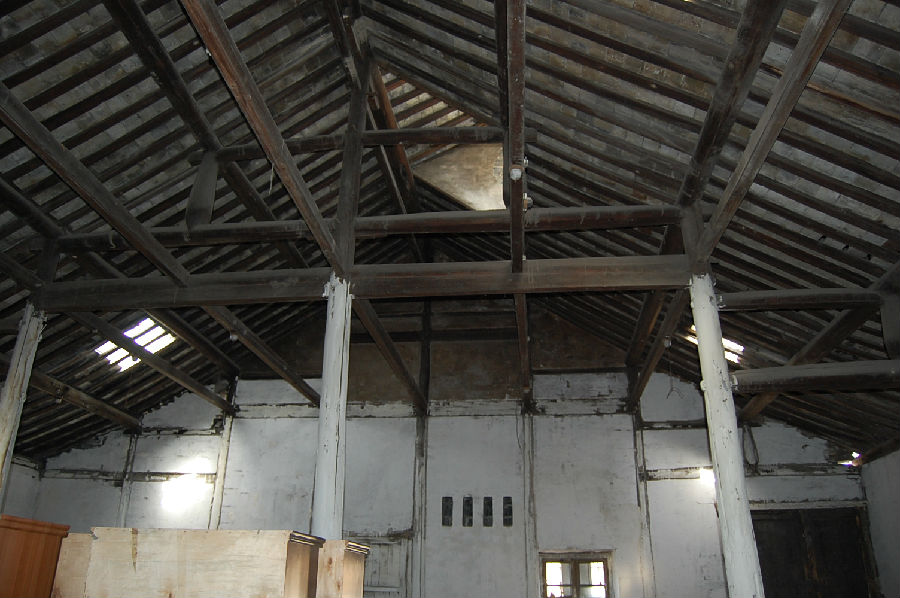

嘉兴市文物保护网 · 市级文物保护点 · 2020-11-03 · 原文


西木桥弄北粮仓位于嘉兴市秀洲区油车港镇澄溪村西木桥弄4号东面，东、北两面临河，粮仓原为油车港镇制油大户倪家所有，曾经应该是卖油的门市部和仓库。坐南朝北，系砖木结构，共二进，占地面积531平方米。第一进北临油车港市河，西间七檩，长13.75米，宽6.12米，抬梁式结构，屋檐铺设望砖，有简单木格式窗户。东间5檩，长10.08米，宽5.7米，抬梁式结构；第二进两边次间为穿坊式，明间为抬梁式，地面铺设小青砖，屋檐铺设望砖。南北墙各有3扇小木格窗。西木桥弄北粮仓历史较长，反映了当时油车港镇制油业兴盛的情况，有较高的科学和历史价值。2009年公布为嘉兴市文物保护点。